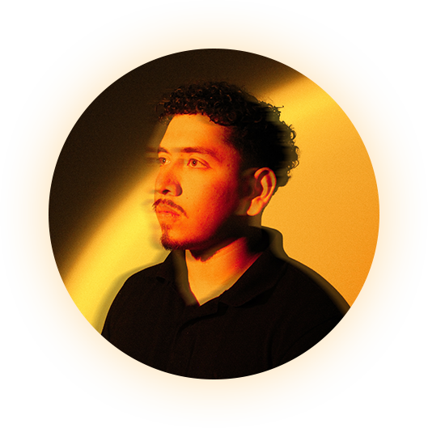

Luis Blanco
LEBlan.co
Attracted to art and design since a child, Luis Blanco is a first-gen Mexican-American Graphic designer based in Phoenix, Arizona. Sketching and editing since he could remember led him to design for his highschool newspaper and student government classes, persuading him into the career of Graphic Design. Luis's primary focus lies in the development of logos and branding, as he aspires to pursue a career with a sports or technology company down the line. Luis is excited to graduate in May 2024, and thrilled for what's to come.
